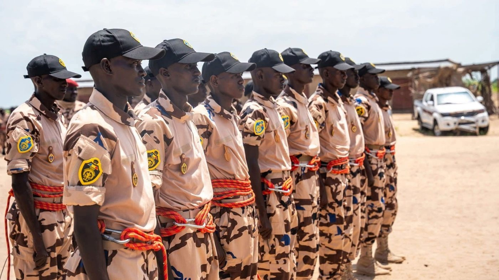
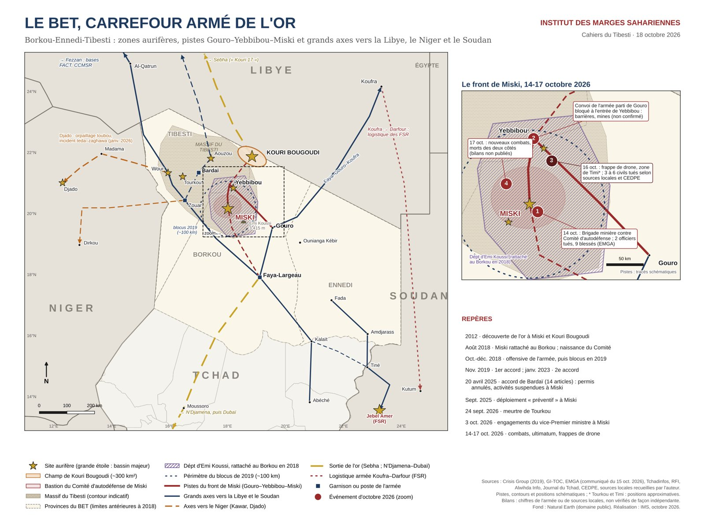

Des agents de la Brigade minière spéciale lors de sa présentation au public. Cette force de 842 hommes, placée sous l'autorité de la SONEMIC, affronte depuis le 14 octobre le Comité d'autodéfense de Miski. Photo communiquée à l'Institut des Marges Sahariennes.
Mercredi 14 octobre, des tirs éclatent autour des sites aurifères de Miski, dans le massif du Tibesti. D'un côté, la Brigade minière chargée de sécuriser les mines ; de l'autre, le Comité d'autodéfense qui tient la zone depuis 2018. Le lendemain, l'état-major général des armées annonce deux officiers tués et neuf blessés. Il somme le Comité de « déposer immédiatement les armes » et prévient que « tout refus sera considéré comme un acte de rébellion ». Le 16, une frappe de drone touche un campement d'orpailleurs et de vendeurs de carburant près de Yebbibou. Le 17, les combats reprennent.
Dix-huit mois après l'accord de paix signé à Bardaï le 20 avril 2025, le Tibesti renoue avec la guerre. Le texte devait clore sept ans de conflit. Il n'a réglé ni la question des armes, ni celle de l'or.

Le BET, carrefour armé de l'or. Sites aurifères, pistes Gouro–Yebbibou–Miski, périmètre du blocus de 2019 et événements du 14 au 17 octobre 2026. Carte : Institut des Marges Sahariennes, fond Natural Earth ; pistes et positions schématiques.
Tourkou, l'étincelleLa rupture a un précédent immédiat. Le 24 septembre, un jeune entrepreneur minier, Tahir Souleymane Arim Itno, est tué par balles sur le site de Tourkou, dans le département de Wour. Des proches de la victime montent vers la zone ; quatorze personnes sont retenues de part et d'autre pendant trois jours. Il faut deux missions du vice-Premier ministre Limane Mahamat, à Miski puis à Bardaï, pour obtenir leur libération le 8 octobre.
Dans une zone où l'État ne rend pas la justice, l'affaire a réveillé une lecture communautaire du conflit : des Teda qui défendent leurs terres, face à un appareil sécuritaire que beaucoup, au Tibesti, perçoivent comme dominé par des Zaghawa. C'est dans ce climat que le Comité de Miski publie, le 13 octobre, un communiqué accusant la Brigade minière de tirs à l'arme lourde et de « prélèvements illégaux ». Le lendemain, on se bat.
Un accord sans arbitreChaque camp brandit le même texte. L'accord de Bardaï compte quatorze articles. Son article 6 annule les permis miniers et suspend toute exploitation à Miski en attendant des études. Ses articles 7 et 10 rétablissent l'autorité de l'État, y compris sécuritaire, dans le département d'Emi Koussi. Son article 12 prévoit la dissolution du Comité au terme de six mois.
L'état-major s'appuie sur la seconde lecture : l'armée est à Miski en vertu de l'accord, et le Comité, qui devait disparaître, est toujours armé. Le Comité s'appuie sur la première : selon des sources locales et ses membres, des sociétés équipées de machines sont revenues sur des sites suspendus, avec l'appui de quelques notables et la protection de la Brigade minière. Ces accusations ne sont pas vérifiées de façon indépendante. Elles rejoignent toutefois le maintien, signalé dès septembre 2025, du permis de GMIA Minerals malgré l'article 6.
Entre les deux, personne ne tranche. La commission de suivi prévue sous l'autorité du Médiateur de la République n'a jamais été formellement installée, selon des sources de la Primature et de la Médiature citées par la presse tchadienne. Le calendrier initial prévoyait de tout boucler en octobre 2025.
L'unité qui affronte le Comité n'appartient pas à l'armée régulière. La Brigade minière spéciale descend de l'ancienne brigade de contrôle des activités minières, placée en octobre 2022 sous l'autorité de la Société nationale de mise en valeur des ressources minières (SONEMIC). Restructurée, elle a été présentée le 1er septembre 2025 : 842 agents formés comme commandos, chargés de lutter contre l'orpaillage illégal.
Le montage pose un problème de fond. La SONEMIC achète l'or au prix administratif de 35 000 FCFA le gramme, quand les acheteurs informels de Kouri Bougoudi en offraient 68 500 fin 2025. Une société qui paie moitié prix dispose ainsi de sa propre force armée pour écarter ses concurrents. Pour le Comité, la brigade n'est pas l'État : c'est le bras armé d'intérêts privés. Son premier grief porte d'ailleurs sur un homme, le coordinateur de la brigade, qu'il désigne comme le « général Bokit » et dont il exige le départ.
Miski : huit ans d'or et de poudre
- 2012Découverte de l'or à Miski et à Kouri Bougoudi ; ruée de dizaines de milliers d'orpailleurs
- Août 2018Miski rattaché au Borkou ; naissance du Comité d'autodéfense
- Oct.-déc. 2018Offensive de la garde présidentielle, puis blocus pendant toute l'année 2019
- Nov. 2019Premier accord : retrait de l'armée, levée du blocus
- Janv. 2023Deuxième accord avec le gouvernement de transition
- 20 avril 2025Accord de Bardaï : permis annulés, exploitation suspendue, dissolution du Comité sous six mois
- 1er sept. 2025Présentation de la Brigade minière spéciale de la SONEMIC (842 agents)
- 24 sept. 2026Meurtre d'un entrepreneur minier à Tourkou, prise d'otages
- 14-17 oct. 2026Combats à Miski, ultimatum de l'état-major, frappe de drone près de Yebbibou
Le pouvoir a pourtant ses raisons. Un comité armé qui survit dix-huit mois à sa propre dissolution devient une autorité concurrente. Les sites du Tibesti attirent des orpailleurs armés venus de Libye, que l'armée tient pour responsables d'au moins 256 morts autour des mines entre avril 2024 et juillet 2026, selon les dépêches de l'agence EFE. Et la filière échappe au Trésor : en 2023, le Tchad a déclaré 2,66 tonnes d'or exportées, quand les Émirats en enregistraient 17,7 tonnes en provenance du Tchad. Plus de 85 % de l'or est sorti hors circuit.
Le FMI exige désormais l'inscription des recettes minières au budget. Un décret du 15 septembre a retiré à la SONEMIC le guichet de l'or au profit du ministère des Mines. Céder à Miski, c'est encourager les autres groupes à négocier les armes à la main. Mais reprendre les sites avec une brigade rattachée à l'acheteur d'or, sans commission de suivi ni publication des permis, revient à donner corps au soupçon que le Comité met en avant.
Les drones ne règlent rienEn 2018 déjà, le pouvoir avait choisi la force. Après le rattachement de Miski au Borkou, la garde présidentielle, commandée par l'actuel chef de l'État, avait livré un mois de combats, perdu « plusieurs dizaines » d'hommes selon Crisis Group, puis imposé un blocus d'un an avant de signer un accord en novembre 2019.
La différence, aujourd'hui, tient aux drones turcs Anka et Aksungur dont dispose l'armée de l'air. Ils frappent loin et sans risque. Mais dans le Tibesti, ils voient les pistes, les pick-up et les campements, pas les combattants retranchés dans le massif. La frappe du 16 octobre a tué des civils : trois selon le secrétaire général du FACT, mouvement armé opposé au gouvernement, qui les nomme ; six jeunes commerçants selon le Centre d'études pour le développement et la prévention de l'extrémisme (CEDPE). L'armée n'a pas communiqué. Selon des sources locales, la population se range désormais derrière le Comité, et un convoi parti de Gouro aurait été bloqué à l'entrée de Yebbibou par des barrages et des mines.
De Doba à MiskiLe grief de Miski dépasse le Tibesti. Treize ans après la ruée vers l'or de 2012, la localité n'a ni école ni centre de santé. Les habitants réclament une rétrocession de 5 % des revenus de l'or, sur le modèle de celle promise au Logone oriental quand le pétrole de Doba a commencé à couler en 2003. Vingt ans plus tard, le comité de gestion de ces 5 % pétroliers est décrit en cessation de paiement. Au Batha comme au Mayo-Kebbi, où l'orpaillage au mercure et au cyanure se pratique sans contrôle, le même reproche revient : la rente part vers le centre et rien ne redescend.
C'est ce qui rend la crise dangereuse. Le conflit peut sortir de Miski par plusieurs portes : la qualification de « rébellion », qui rapproche le Comité des mouvements armés installés au Fezzan libyen ; la solidarité des Teda du Niger et de Libye ; la fusion des affaires de Tourkou et de Miski dans un récit communautaire ; et l'écho national d'un grief que partagent d'autres régions productrices.
Ce qui peut suivreLe scénario le plus probable à trois mois est une guerre d'usure : l'armée tient Miski et les pistes, reconduit le blocus de 2019, frappe les convois, et le Comité harcèle depuis le massif. Un retour à la table reste possible si le Médiateur obtient le départ du coordinateur de la brigade, la sortie des sociétés mécanisées et l'installation, enfin, de la commission de suivi. Le précédent de 2019 montre que l'option militaire a déjà conduit à négocier. Le risque d'une extension régionale, avec l'arrivée de combattants teda du Kawar nigérien ou du Fezzan, reste plus faible, mais une frappe à lourd bilan civil suffirait à le rendre réel.
À Miski, la question n'a pas changé depuis 2012 : à qui appartient l'or, et qui en touche la rente. Tant qu'aucune instance ne tranche, chaque accord ne fait que suspendre la guerre.
Cet article s'appuie sur la note de l'Institut des Marges Sahariennes « Miski, la paix rompue par l'or » (18 octobre 2026), qui détaille l'accord de Bardaï, la chaîne de l'or et les scénarios, cartes à l'appui.